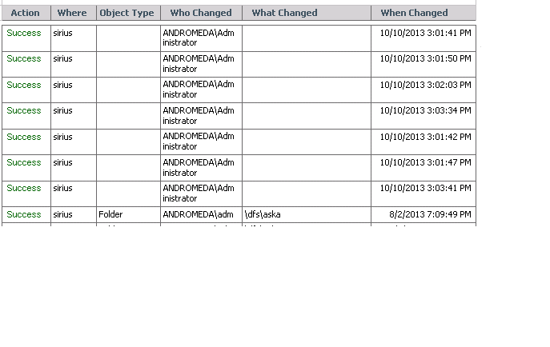

Object Type and What Changed columns are empty:

This is a typical report from a target server with a disabled/unavailable Remote Registry service. In that case event collector tries to work with another API and sometimes all events are interpreted as "read" with "Object path" missing.
Check if Remote Registry service is running on the target server and is accessible from Netwrix host machine.
This is a typical report from a target server with a disabled/unavailable Remote Registry service. In that case event collector tries to work with another API and sometimes all events are interpreted as "read" with "Object path" missing.
Check if Remote Registry service is running on the target server and is accessible from Netwrix host machine.